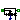
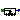
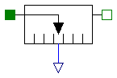
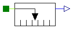
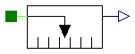

| Name | Description |
|---|---|
|  ForceSensor | Ideal sensor to measure the force between two flanges |
|  PositionSensor | Ideal sensor to measure the absolute position |
| SpeedSensor | Ideal sensor to measure the absolute velocity |
| AccSensor | Ideal sensor to measure the absolute acceleration |

Measures the cut-force between two flanges in an ideal way and provides the result as output signal (to be further processed with blocks of the Modelica.Blocks library).
| Type | Name | Description |
|---|---|---|
| Flange_a | flange_a | (left) driving flange (flange axis directed INTO cut plane, e. g. from left to right) |
| Flange_b | flange_b | (right) driven flange (flange axis directed OUT OF cut plane) |
| output RealOutput | f | force in flange_a and flange_b (f = flange_a.f = -flange_b.f) |
model ForceSensor
"Ideal sensor to measure the force between two flanges"
extends Modelica.Icons.TranslationalSensor;
Interfaces.Flange_a flange_a
"(left) driving flange (flange axis directed INTO cut plane, e. g. from left to right)";
Interfaces.Flange_b flange_b
"(right) driven flange (flange axis directed OUT OF cut plane)";
Modelica.Blocks.Interfaces.RealOutput f(
redeclare type SignalType = SI.Force)
"force in flange_a and flange_b (f = flange_a.f = -flange_b.f)";
equation
flange_a.s = flange_b.s;
flange_a.f = f;
flange_b.f = -f;
end ForceSensor;

Measures the absolute position s of a flange in an ideal way and provides the result as output signals (to be further processed with blocks of the Modelica.Blocks library).
| Type | Name | Description |
|---|---|---|
| Flange_a | flange_a | flange to be measured (flange axis directed INTO cut plane, e. g. from left to right) |
| output RealOutput | s | Absolute position of flange as output signal |
model PositionSensor "Ideal sensor to measure the absolute position"
extends Modelica.Icons.TranslationalSensor;
Interfaces.Flange_a flange_a
"flange to be measured (flange axis directed INTO cut plane, e. g. from left to right)";
Modelica.Blocks.Interfaces.RealOutput s( redeclare type SignalType =
SI.Position) "Absolute position of flange as output signal";
equation
s = flange_a.s;
0 = flange_a.f;
end PositionSensor;

Measures the absolute velocity v of a flange in an ideal way and provides the result as output signals (to be further processed with blocks of the Modelica.Blocks library).
| Type | Name | Description |
|---|---|---|
| Flange_a | flange_a | flange to be measured (flange axis directed INTO cut plane, e. g. from left to right) |
| output RealOutput | v | Absolute velocity of flange as output signal |
model SpeedSensor "Ideal sensor to measure the absolute velocity"
extends Modelica.Icons.TranslationalSensor;
Interfaces.Flange_a flange_a
"flange to be measured (flange axis directed INTO cut plane, e. g. from left to right)";
SI.Position s "Absolute position of flange";
Modelica.Blocks.Interfaces.RealOutput v( redeclare type SignalType =
SI.Velocity) "Absolute velocity of flange as output signal";
equation
s = flange_a.s;
v = der(s);
0 = flange_a.f;
end SpeedSensor;
Measures the absolute acceleration a of a flange in an ideal way and provides the result as output signals (to be further processed with blocks of the Modelica.Blocks library).
| Type | Name | Description |
|---|---|---|
| Flange_a | flange_a | flange to be measured (flange axis directed INTO cut plane, e. g. from left to right) |
| output RealOutput | a | Absolute acceleration of flange as output signal |
model AccSensor "Ideal sensor to measure the absolute acceleration"
extends Modelica.Icons.TranslationalSensor;
Interfaces.Flange_a flange_a
"flange to be measured (flange axis directed INTO cut plane, e. g. from left to right)";
SI.Velocity v "Absolute velocity of flange";
Modelica.Blocks.Interfaces.RealOutput a( redeclare type SignalType =
SI.Acceleration) "Absolute acceleration of flange as output signal";
equation
v = der(flange_a.s);
a = der(v);
0 = flange_a.f;
end AccSensor;